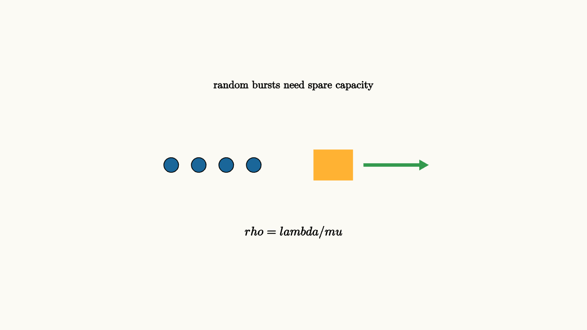

Queueing Explains Lines And Latency
Lines grow because arrivals are uneven and service takes time. The most important queueing lesson is that high utilization can be dangerous. If a server is busy almost all the time, small random bursts have nowhere to go.
The same story appears in places that do not look like lines. A website request waits for a server thread. A hospital patient waits for a bed. A data packet waits in a router. A homework question waits for office hours. In each case, work arrives, a resource serves it, and unfinished work forms a queue.
For a simple single-server queue with arrival rate $\lambda$ and service rate $\mu$, utilization is
As $\rho$ approaches $1$, waiting time rises sharply. A system running at 95 percent utilization may look efficient on paper while producing terrible delays.
The reason is easy to visualize. At 50 percent utilization, a busy minute is often followed by an empty minute that lets the system catch up. At 95 percent utilization, an empty minute is rare. A burst of arrivals creates a backlog, and the server has almost no spare time to erase it. The queue remembers bad luck for a long time.

source
background = [0.985, 0.98, 0.955, 1]
camera = Camera(4.8b)
mesh line = block {
. fill{BLUE} center{[-2.0, 0, 0]} Circle(0.12)
. fill{BLUE} center{[-1.55, 0, 0]} Circle(0.12)
. fill{BLUE} center{[-1.1, 0, 0]} Circle(0.12)
. fill{BLUE} center{[-0.65, 0, 0]} Circle(0.12)
. fill{ORANGE} stroke{ORANGE, 2} center{[0.65, 0, 0]} Rect([0.62, 0.48])
. color{GREEN} Arrow(start: [1.15, 0, 0], end: [2.2, 0, 0])
. center{[0, 1.3, 0]} Text("random bursts need spare capacity", 0.62)
. center{[0, -1.1, 0]} Tex("\\rho = \\lambda/\\mu", 0.72)
}
"queue"
play Fade(0.6)The formula for an idealized $M/M/1$ queue gives average number in the system:
The exact assumptions are special, but the shape is the lesson. Near full utilization, the denominator gets small and the line explodes.
Little's law gives another useful handle:
The average number in the system equals the arrival rate times the average time in the system. If 10 requests per second arrive and each spends 0.4 seconds in the system, about 4 requests are present on average. This law applies very broadly, so it is a good way to connect a visible line to an invisible delay.
source
param load = 0.4
background = [0.985, 0.98, 0.955, 1]
camera = Camera(4.8b)
let Curve = |load| block {
. stroke{GRAY, 2} Line(start: [-2.5, -1.0, 0], end: [2.5, -1.0, 0])
. stroke{GRAY, 2} Line(start: [-2.5, -1.0, 0], end: [-2.5, 1.2, 0])
. stroke{BLUE, 3} ExplicitFunc(|x| -1.0 + 0.22 * ((x + 2.45) / (2.55 - x)), [-2.3, 2.25, 160])
. fill{ORANGE} center{[-2.5 + 4.7 * load, -1.0 + 0.22 * ((4.7 * load + 0.05) / (5.05 - 4.7 * load)), 0]} Circle(0.08)
. center{[0, 1.55, 0]} Text("latency bends upward near capacity", 0.62)
}
"moderate load"
mesh curve = Curve(load: $load)
play Fade(0.5)
"near capacity"
load = 0.9
curve = Curve(load: $load)
play Lerp(1.0)Queueing applies to restaurants, call centers, servers, hospital beds, checkout lines, and CPUs. Good design leaves slack, pools capacity, shortens service times, and smooths arrivals when possible.
There are several design levers. Appointments smooth arrivals. Express lanes shorten service for small jobs. Shared queues pool capacity. Better tools reduce average service time. Extra staff creates slack during predictable peaks. Each lever changes a different part of the queueing story, so the right fix depends on whether the pain comes from bursts, slow service, or too little capacity.
The lesson to keep: average load is a weak comfort. Variability plus high utilization creates waiting, so reliable systems pay for slack.